Your first session
AnkiGPT turns your source documents into concepts: a title, an explanation, and key points. During study it uses those concepts and source passages to generate questions. Anki's scheduler decides when cards return for review.
- Install the Windows MSI and launch the app. For an upgrade, close the app and run the new installer; uninstall first only if the installer asks you to.
- Open Settings and configure your AI provider.
- Choose Create Course, add a short source document, and review the proposed concepts.
- Choose Study, select a deck and question types, then click GO.
Start with a small document and about five concepts. Once you understand the process, try a longer chapter or a group of related documents.

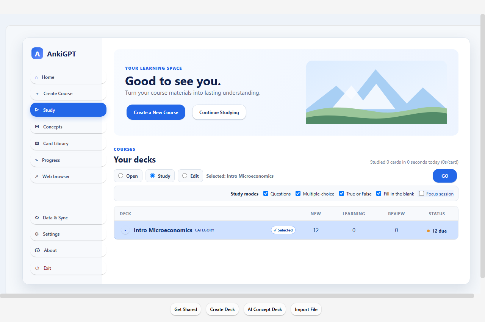
1 2This guide is stored with the app and works without internet. AI requests and websites still need a connection. Screenshots use a demonstration profile and simulated AI content; your course text and answers will differ.
Connect an AI provider
- Open Settings in the left sidebar.
- Select your Provider and enter its API key.
- Enter a model available to your provider account. For an OpenAI-compatible service, use that service's model name and base URL. The model shown in the screenshot is an example.
- Click Save settings, then Test connection. Scroll down if these buttons are below the visible area.

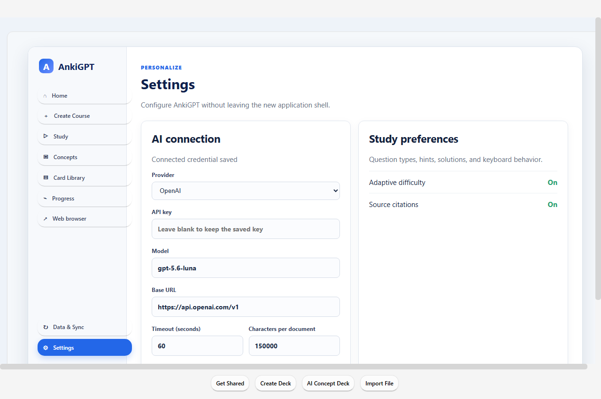
1
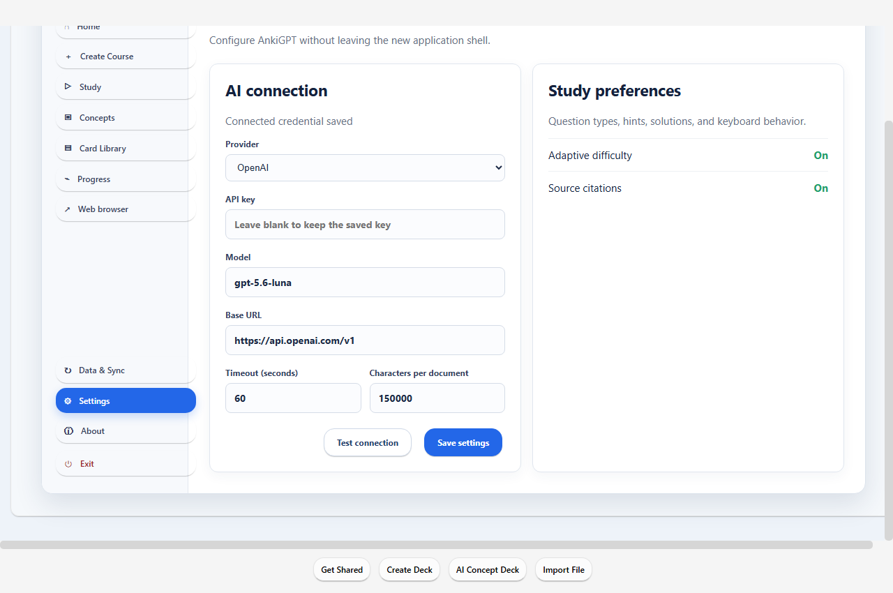
2AI features send relevant prompts and course content to the provider you configure. Review its account and billing requirements. You can read this guide and use ordinary collection tools without an AI connection.
Create a course from your material
- Click Create Course. Use Add Files, Add Folder, or Add URL. Supported documents include PDF, DOCX, Markdown, and plain text.
- For several documents, choose one combined deck or separate decks. For a textbook, enable This source is a book and follow the book workflow.
- Scroll to Course Goals. Choose or enter a course/category and, for non-book sources, a subcategory. Fill in the subject, learning level, focus topics, and exclusions.
- Use Additional guidance to explain what you want to learn. Review the remaining options farther down the form, then click Extract Concepts.

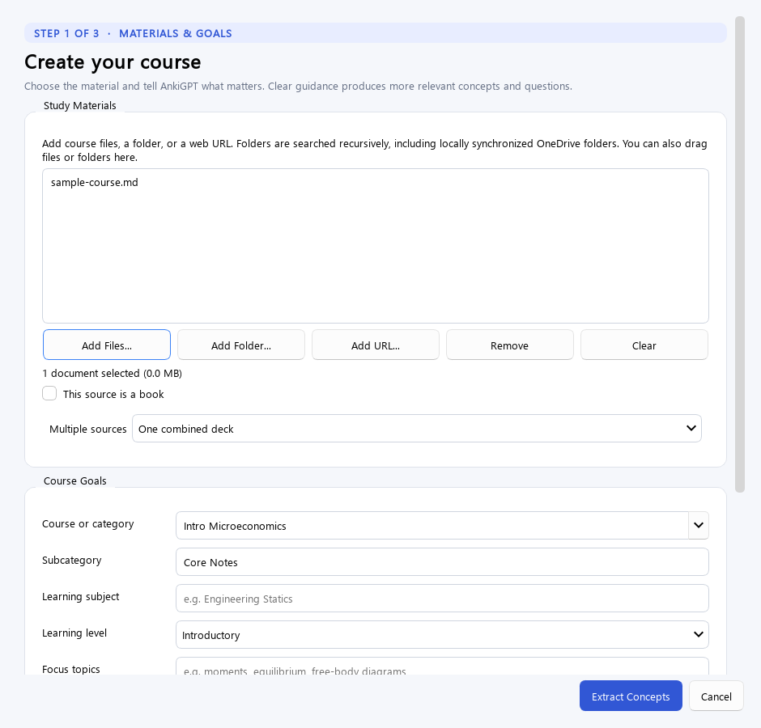
1
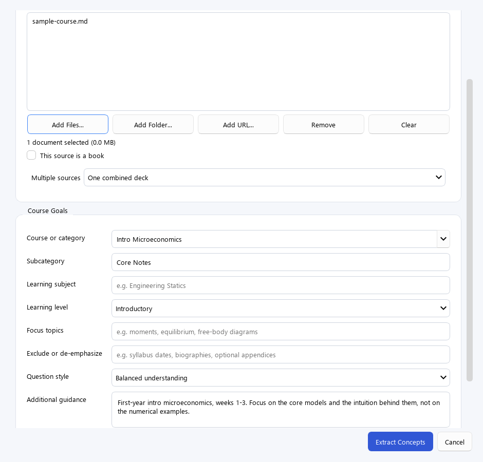
2 3Example guidance: “First-year microeconomics. Focus on opportunity cost, supply and demand, and elasticity. Explain the intuition. Exclude class schedules, grading policies, and administrative instructions.”
Folders are searched recursively. Cloud-synced files must be available locally. Web sources must be readable by the app; pages requiring a login may not work.
Review a book's structure
When you mark a source as a book, AnkiGPT detects chapters and sections before generating concepts. The book becomes a subcategory under your chosen course or subject.
- Read the detected chapter and section titles.
- Select the portions you want and correct the structure where needed.
- Choose chapter-level or section-level decks, then continue extraction.

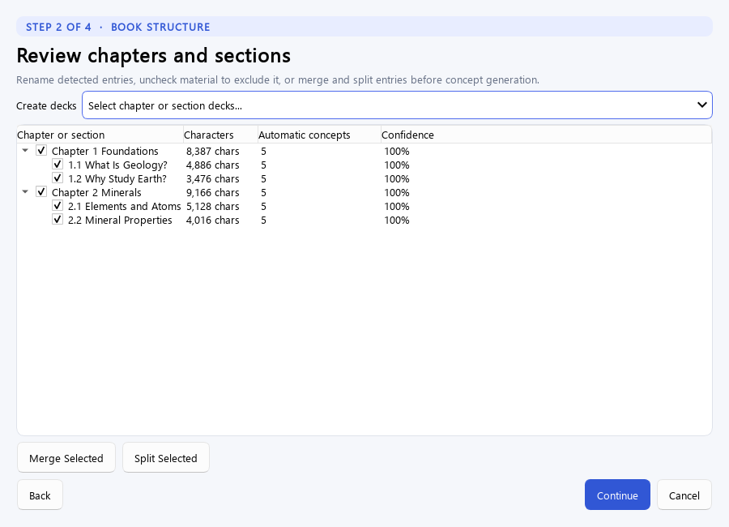
1If the outline is poor, try a clearer source with selectable text and explicit headings, or start with a single chapter.
Check the proposed concepts
Extraction can take time for a long document. Follow the progress messages until the review table appears. Generation is a proposal: you decide what becomes study material.
- Read the proposed titles, summaries, key points, and destination decks.
- Edit unclear or incorrect text and deselect unwanted concepts.
- Use the create button to save the selected concepts to your collection.

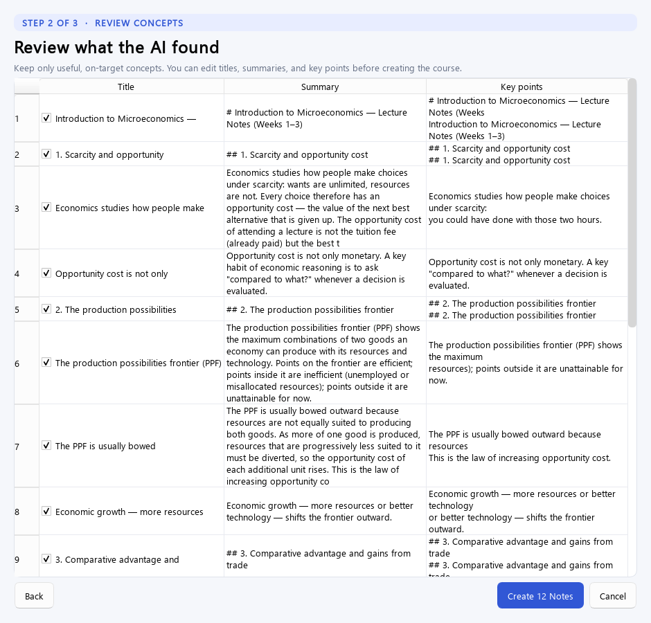
1After saving, use Concepts to refine the material. AI output can contain mistakes; check it against your source.
Choose a deck and question types
- Choose Study in the sidebar. Expand the course hierarchy and click the category, subcategory, or deck you want.
- Check the Selected label. Choose Open to see course information, Study to answer questions, or Edit to change its material.
- For Study, enable the question formats you want: Questions (typed answers), Multiple-choice, True or False, and Fill in the blank. You can mix formats.
- Click GO to perform the selected action. Selecting a row alone does not start a session.
New, Learning, and Review counts describe your queues. If nothing is due, try another deck or return when reviews are scheduled.
Answer, read the feedback, and continue
- Read the question and answer from memory. For a typed answer, enter your explanation and click Check Answer. The screen also shows the applicable keyboard shortcut.
- For choice-based formats, select an answer and follow the on-screen action. For self-graded cards, reveal the answer before rating yourself.
- Read the feedback, missing points, and model answer. Scroll down to see additional explanation or source references.
- Choose Hard, Good, or Easy to rate your recall. The star marks the suggested rating. Next Question uses the repeat/Again rating rather than accepting the suggestion automatically.

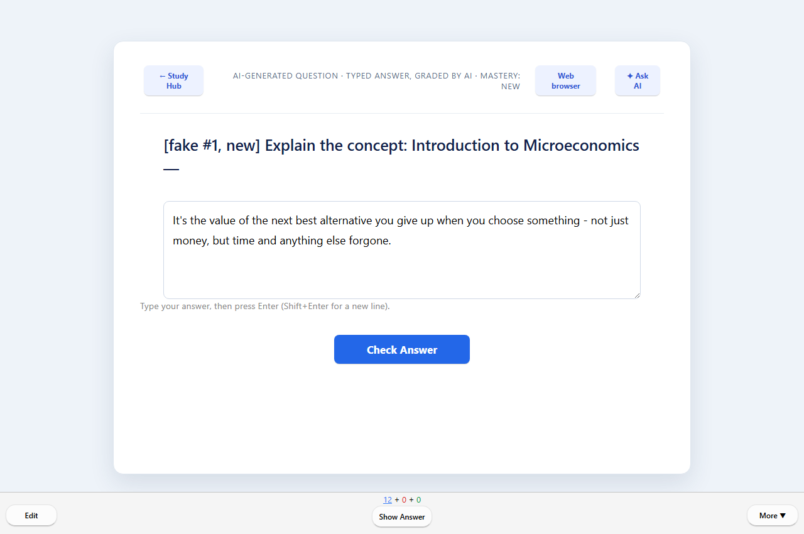
1 2
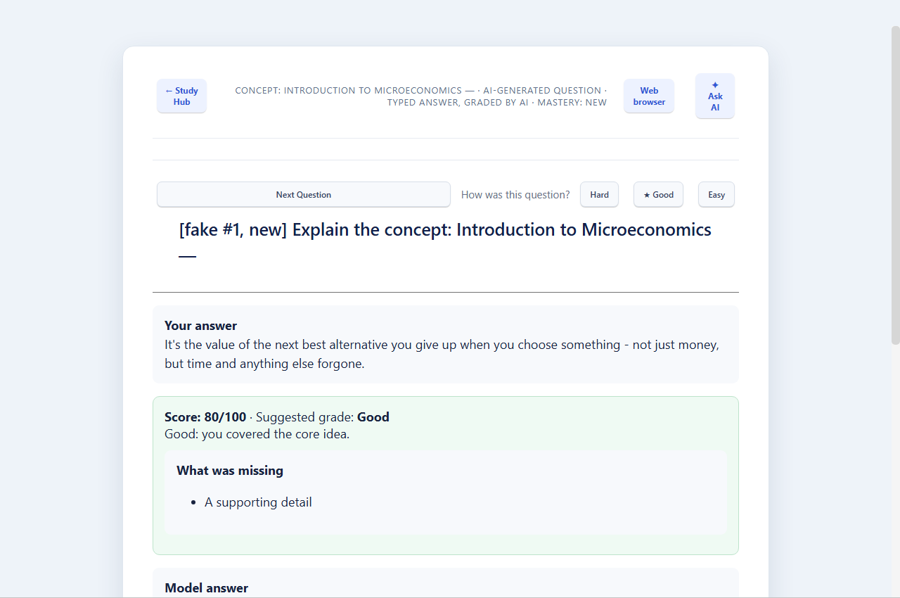
3 4Ratings affect future scheduling. Treat AI feedback as assistance; use the source material to resolve disagreements.
Improve concepts and ordinary cards
- Open Concepts. Expand a deck group, or search by deck name, concept title, or description.
- Open a concept and edit its title, description, and key points. Put each key point on its own line.
- Scroll down and click Save changes. Use Cancel or the back link to leave without saving the form.

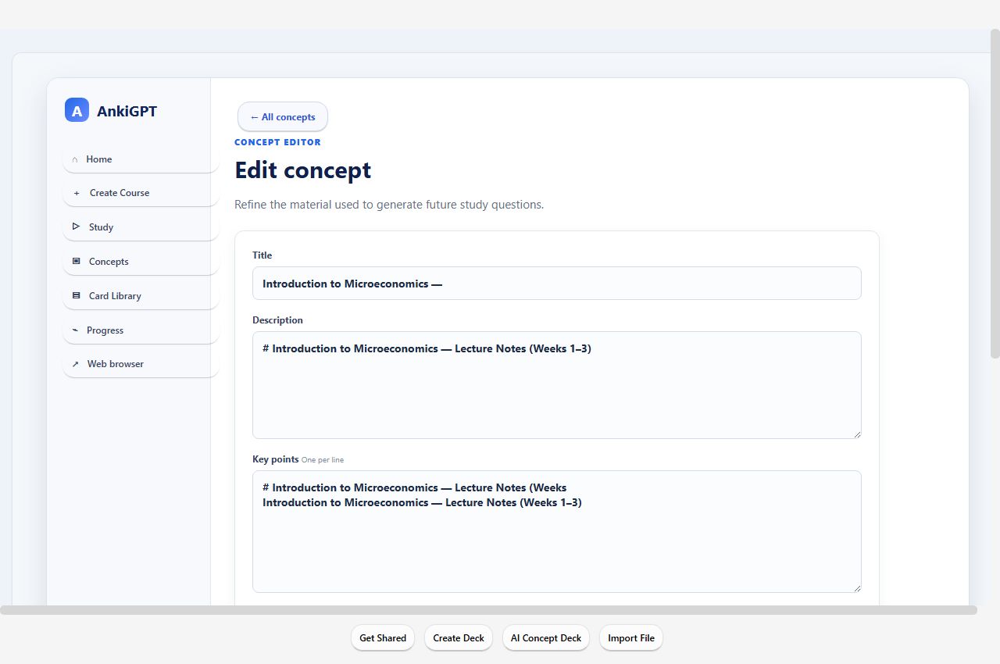
1Card Library lets you browse and edit ordinary note fields or add a card. Its search applies to the newest 500 notes currently loaded, and a note with several cards is listed once. Use the course's concept editor when you want to change the source concept for AI questions.
Ask for an explanation or improvement
- During study, click Ask AI. When editing a concept, use its AI improvement control.
- Choose a suggested prompt or type your own question. Be specific: “Explain why this answer is wrong” is more useful than “Help.”
- Send the question and read the response and source references. In edit mode, review the proposed changes before applying them, then save the concept.

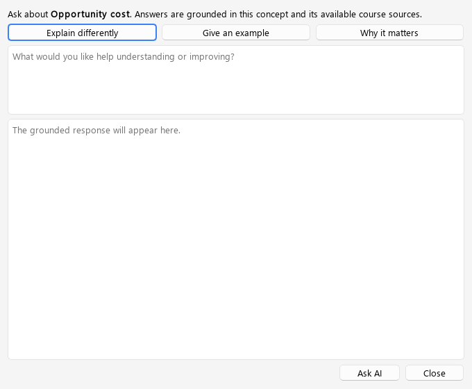
1Ask AI uses the current concept and available source context. If an answer is unclear, ask a follow-up with the exact point you want explained.
Attach or generate an illustration
- Open a concept and scroll to its visual controls.
- Attach an existing image, or choose the generation control to request an instructional visual.
- For a generated visual, review the preview, rationale, and image description before accepting it. Regenerate if needed.
- Check the visual description and placement, then save the concept. Use the remove control if the visual does not help.

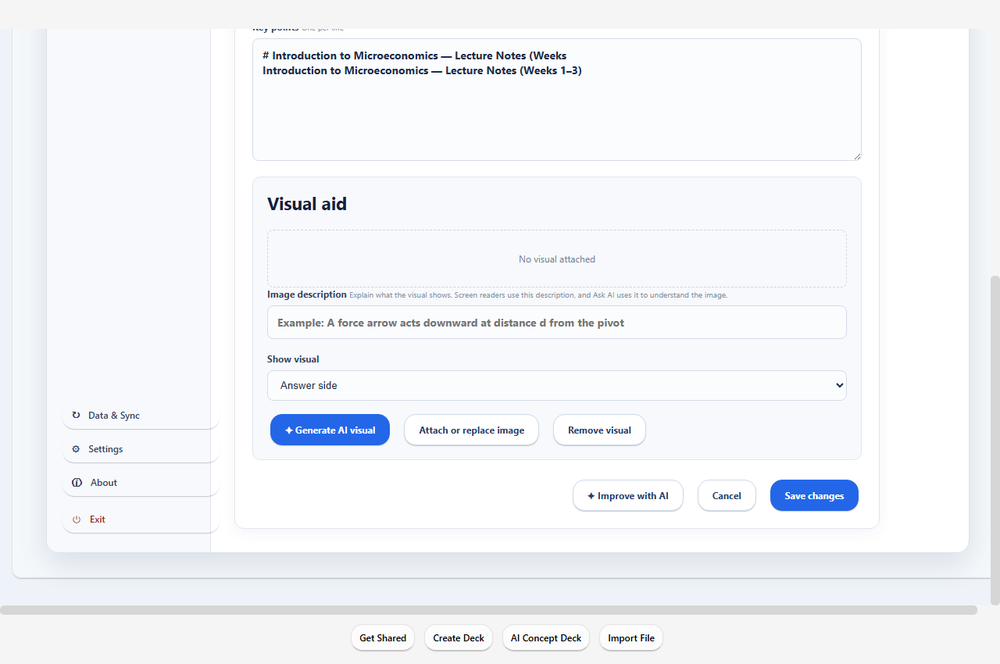
1A good visual clarifies one relationship or process. Check labels and factual details just as you would check a generated explanation.
Study in a small, focused session
- On the Study screen, enable Focus session.
- Choose a card goal and an optional Quiet timer. Select Untimed if you prefer a card goal alone.
- Select a deck and click GO. Follow the progress indicator while answering.
- Use Take a break to pause. Resume when ready; break time does not count toward the timer.

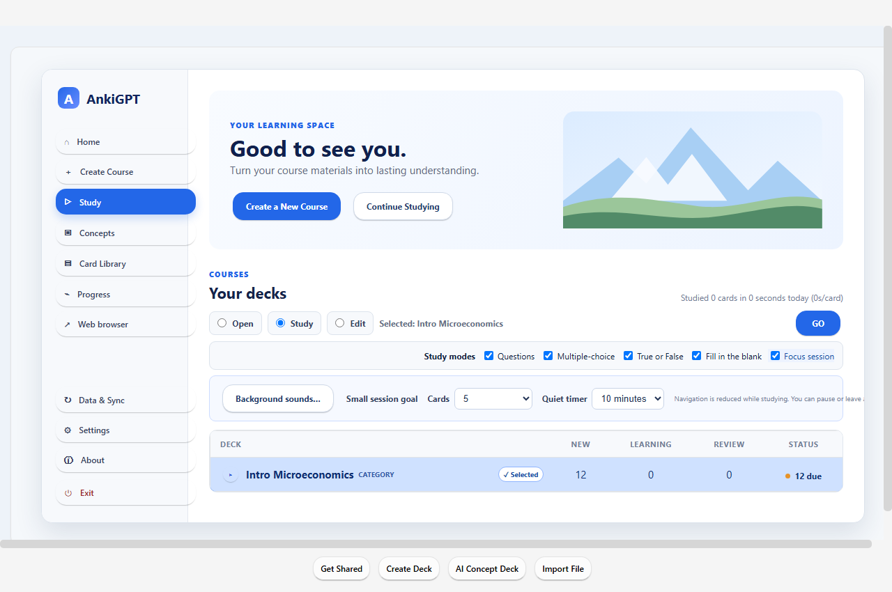
1The session ends after rating a card once the goal or time limit is reached, or when you leave early or run out of cards. A recap shows your progress. Sessions do not resume after closing the app.
Play background sound
- In the Study focus options, open Background sounds.
- Select white, pink, or brown noise, or choose a local audio file. Click Play.
- Adjust volume or mute. Optionally enable Start this sound with focus sessions.
- Click Done to hide the controls. Use Stop when you want playback to end.

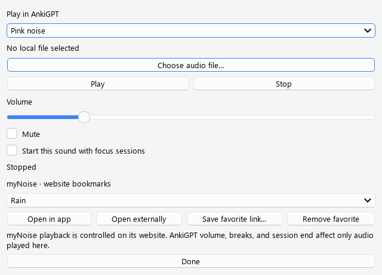
1 2Local audio pauses during focus breaks and stops when you leave the reviewer. myNoise links open websites: their own playback controls apply, and AnkiGPT's local volume and session controls do not control those sites.
Open this guide and other bookmarks
- Choose Web browser in the sidebar or reviewer.
- The first time you open the browser in a profile session, this guide opens automatically. If you opened a specific website link, that website opens instead. Selecting a bookmark loads it immediately. To return to the guide, select AnkiGPT How To. You can also use Open bookmark to reopen the selected bookmark.
- For a website, type its address and press Enter, or choose myNoise, How to Study, or Khan Academy from the bookmark list.
- Use Bookmark page to save a website, + New browser tab for another page, and Study to return to learning.

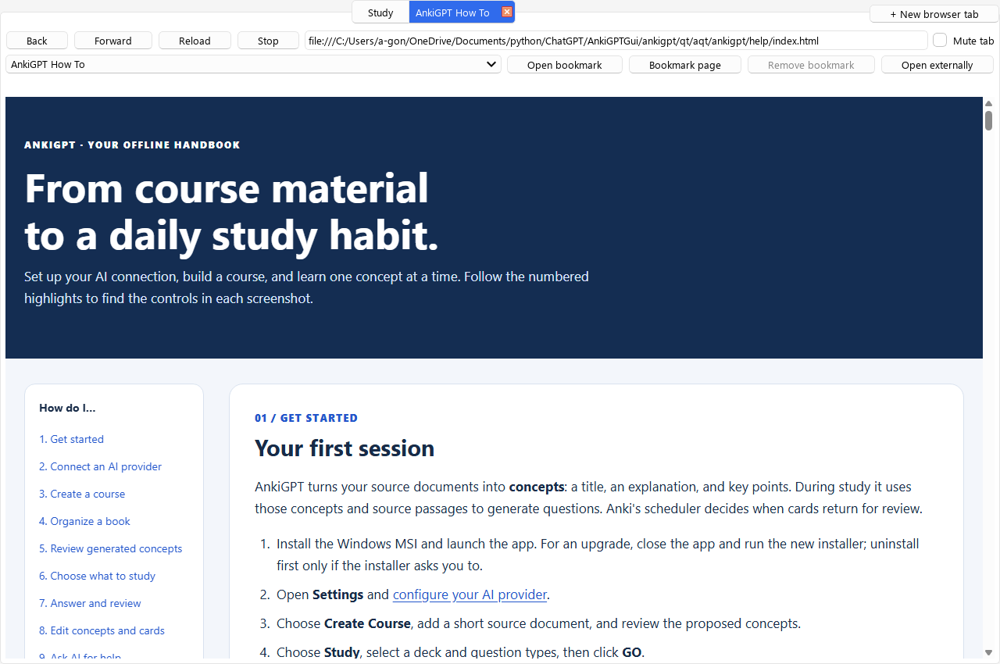
1 2The four built-in bookmarks cannot be deleted; Remove bookmark is disabled when one is selected. To delete a bookmark you added, select it, click Remove bookmark, and confirm with Yes. Choosing No keeps it.
Automatic pop-up windows and tabs are blocked. Links opened through a click or keyboard action can still open a new tab. Built-in ad filtering also blocks known ad services and hides common in-page banners and ad overlays. Some ads may still appear; cookie notices and ordinary dialogs remain available. If a website does not work properly, check Allow ads on this site in the browser toolbar. Its open tabs reload, and the choice is remembered for that hostname. Uncheck it to restore filtering.
Bookmarks are saved with your profile. Website sign-ins and cookies are temporary. Browser audio may continue in Study; use Mute tab or close that tab to stop it. Opening a browser tab pauses an active focus session; returning resumes it only if the browser caused the pause.
You can click any screenshot in this guide to view the original at full size, then use the browser's Back button to return. The numbered highlights stay on the guide page.
Back up, upgrade, or move to another computer
On Windows, the default data folder is %APPDATA%\Anki2, normally C:\Users\<Windows user>\AppData\Roaming\Anki2. AnkiGPT creates it on first launch if it is missing and reuses it if it already exists. Original Anki and AnkiGPT share this location by default.

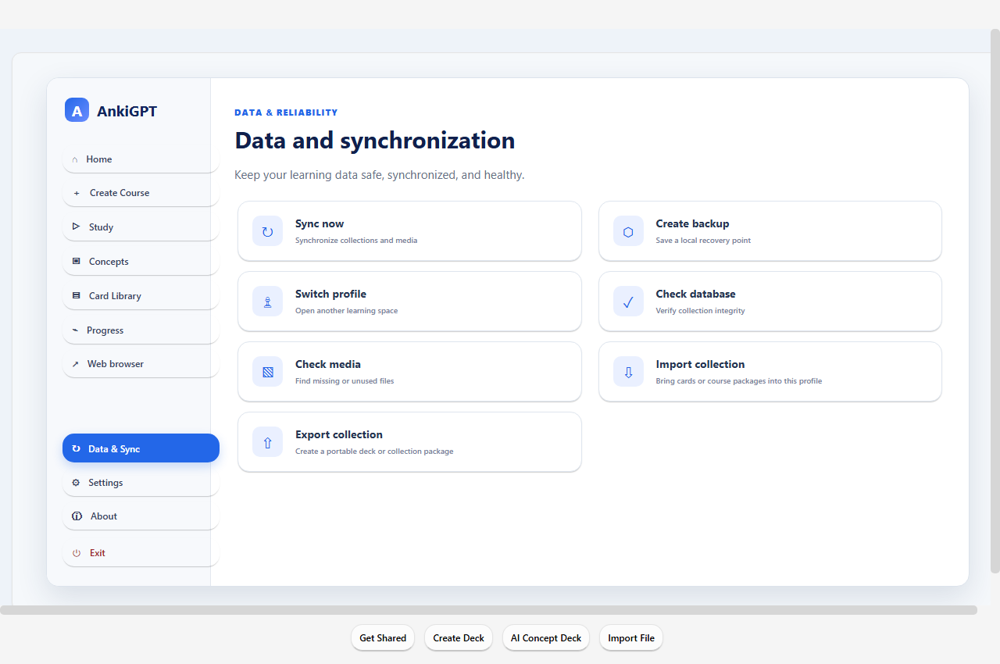
1 2| Inside each profile folder | What it contains |
|---|---|
collection.anki2 | Decks, notes, cards, and scheduling |
collection.media | Images, audio, and other card media |
ankigpt.sqlite | Additional AnkiGPT source and study data |
backups | Collection recovery backups |
Make a complete copy
- Close AnkiGPT and Anki.
- Open
%APPDATA%\Anki2in File Explorer. - Copy the entire folder to your backup destination. A profile such as
User 1must include its database, media, and AnkiGPT sidecar file. - When moving computers, install and close the app on the new computer, preserve any data already there, then copy the saved data into that user's equivalent location.
Create backup and ordinary Anki synchronization are not a substitute for a complete AnkiGPT folder copy. Do not assume they preserve the separate ankigpt.sqlite database. Re-enter provider credentials if needed on a new machine. If you used a custom data directory, back up that directory instead.
Installing an app update normally preserves this data folder. Do not delete it to upgrade the application.
When something does not work
AI connection fails
Check the provider, API key, model, and base URL in Settings. Save changes and test again. Read the reported error: an unavailable model, rejected credential, or provider usage limit needs a different fix from a network timeout.
A source produces no useful concepts
Check that the file contains readable text. Try a shorter document, clearer topic guidance, or fewer exclusions. A scanned PDF may need text recognition before import. For a website requiring sign-in, use a readable local document you are permitted to use.
Clicking a deck does not start studying
Confirm the Selected label, choose Study, enable a question format, and click GO. If the queue is empty, choose another deck or return when reviews are due.
A button shown in this guide is missing
Scroll down inside the page or dialog, or enlarge the window. Some settings and visual controls appear below the first screen. An older app version may have a different layout.
There is sound after returning to Study
Check browser tabs for website playback. Mute the tab or stop playback on the site. Local background-audio volume does not control website audio.
Where are my decks after reinstalling?
Open the same profile and check the data folder described in Backups. A different Windows user or custom startup directory opens a different collection. Avoid replacing a populated data folder until you have copied it somewhere safe.